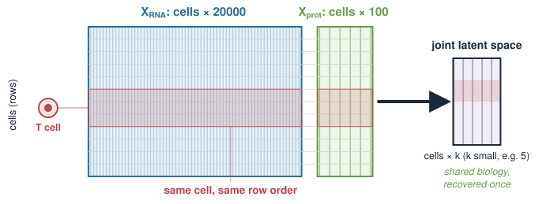
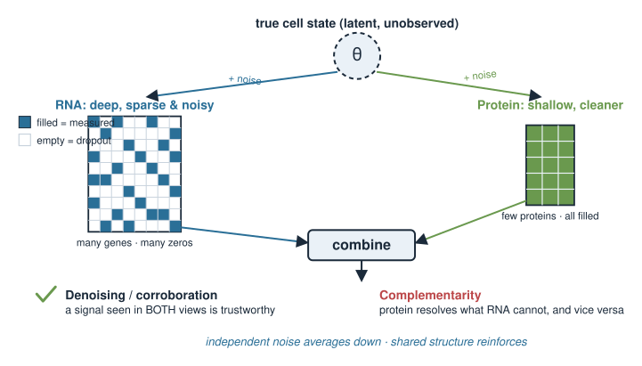
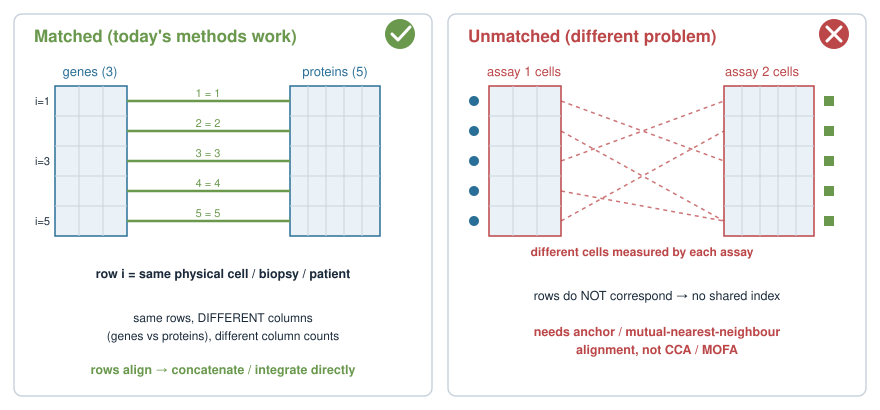
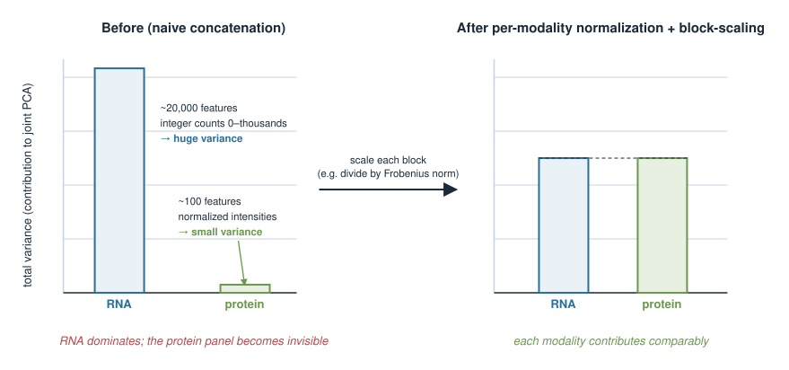
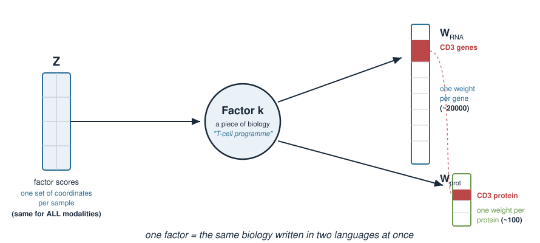
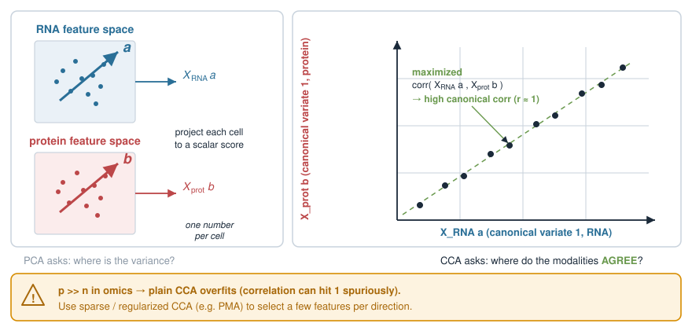
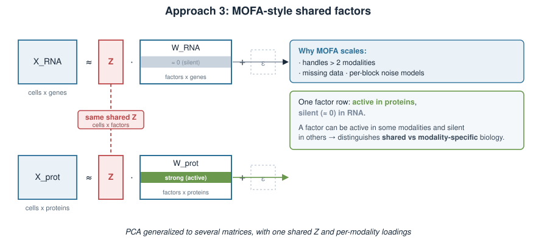
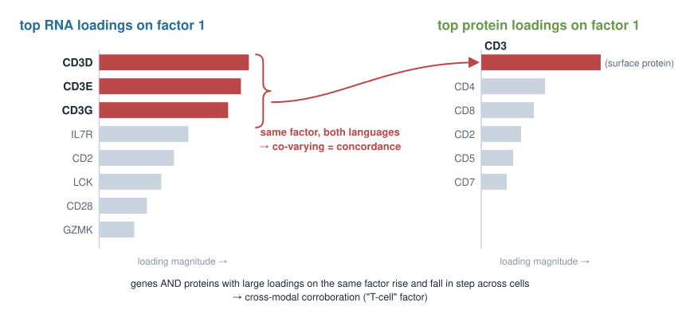
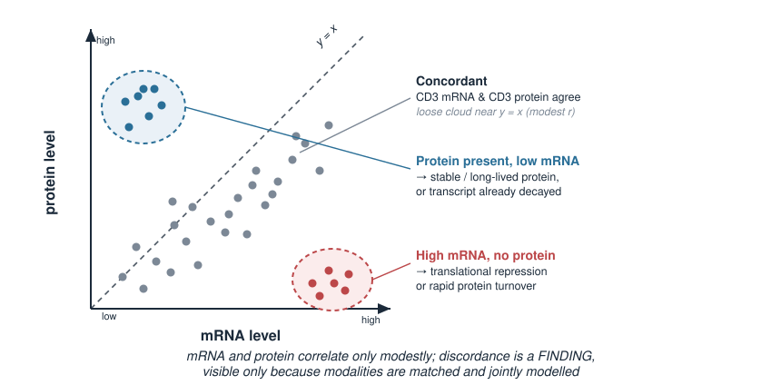

Modern experiments often measure several kinds of molecule on the same cells or samples — RNA and protein, RNA and chromatin, and so on. Each measurement is a separate matrix, but they describe one biology. Today we learn how to put them into a shared picture.
Why integrate at all: the modalities share biology, and each one is separately noisy.
The setup: matched samples, one matrix per modality, wildly different scales and feature counts.
The key idea: a joint latent space — a few shared axes that all modalities are noisy views of.
Three families of methods, named without heavy math: concatenation-then-PCA, CCA, and MOFA-style shared factors.
Reading the result: which genes and proteins co-vary, and where mRNA and protein disagree.
This is an Applications day. It builds directly on Principal component analysis: a latent space is still a small set of directions, found from covariance.
A biology picture first
You run a CITE-seq experiment: for each single cell you measure
its transcriptome — counts for ~20,000 genes (RNA), and
a panel of surface proteins — say 100 antibody-tagged markers.
A T cell is a T cell in both views. The cell types, the activation states, the biology — that shared structure lives in both matrices at once. We want to recover it jointly, not twice.

Why integrate: shared biology, separate noise
Each modality on its own is an incomplete, noisy measurement of the same underlying state.
RNA is deep (thousands of genes) but very sparse and noisy per cell — dropouts, low counts.
Protein panels are shallow (a handful of markers) but often cleaner and closer to function.
The true cell state is not directly observed; each assay is a partial view of it.
Two payoffs from combining them:
Denoising / corroboration — a signal seen in both views is far more trustworthy than one seen in either alone.
Complementarity — protein resolves what RNA cannot (and vice versa); together they separate states neither could alone.

The premise: matched samples
Everything today rests on one condition:
\[\text{row } i \text{ of every matrix is the } \textbf{same physical sample}.\]
Same cells (a multiome droplet), or same tumour biopsy split for RNA-seq and proteomics, or same patient.
The columns differ completely: genes in one matrix, proteins in another, and different numbers of them.
This “same rows, different columns” layout is what lets us look for structure that is shared across modalities.
If the samples are not matched (different cells measured by each assay), this is a different problem — you would need anchor-based alignment, not the methods here.

The obstacle: different scales and sizes
The two matrices are not on speaking terms numerically:
RNA
Protein
# features
~20,000
~100
typical values
integer counts, 0–thousands
normalized intensities
total variance
huge (many features)
small (few features)
If we naively glue them together, the modality with more features and bigger numbers dominates everything — the small protein panel becomes invisible.
So before any integration we must put the modalities on a comparable footing: normalize within each modality, then scale each block so no one modality drowns out the others.

The big idea: a joint latent space
Recall from Principal component analysis: PCA replaces thousands of features with a few latent axes — directions along which samples vary.
For multiome, we want one shared set of latent axes that both modalities express:
each sample gets one set of coordinates (factor scores) in the joint space,
each modality contributes its own loadings — how its features read out along each shared axis.
\[\underbrace{\text{shared factors}}_{\text{same for all modalities}} \;\longrightarrow\; \underbrace{\text{RNA loadings}}_{\text{one per gene}} \;\;\text{and}\;\; \underbrace{\text{protein loadings}}_{\text{one per protein}}.\]
A factor is a piece of biology (a cell type, an activation programme) written in two languages at once.

Approach 1: concatenate, then PCA
The simplest idea: paste the blocks side by side into one wide matrix, then run ordinary PCA.
Each canonical pair is a shared axis defined by being consistent across modalities.
By construction it emphasizes the common signal and downweights modality-specific noise.
Caveat: with more features than samples (always, in omics) plain CCA overfits — practical versions are regularized / sparse (e.g. the PMA package’s sparse CCA).

Approach 3: MOFA-style shared factors
The most general framing, and the one matching our “joint latent space” picture directly.
MOFA (Multi-Omics Factor Analysis) learns a small set of factors such that each modality is approximately
One score matrix \(Z\) (samples × factors), shared by all modalities.
A separate loading matrix per modality — so a factor can be active in some modalities and silent in others.
Handles more than two modalities, missing data, and different noise models per block.
Think of it as PCA generalized to several matrices at once, with the honesty to say “this factor is protein-only.”

The three at a glance
Method
Optimizes
Shared object
Sees modality-specific signal?
Concatenation + PCA
total variance of the glued matrix
principal components
no (one feature pool)
CCA
correlation between modalities
canonical variate pairs
no (only the agreement)
MOFA-style factors
reconstruction of each block
factor scores \(Z\) + per-block loadings
yes (per-factor activity)
All three produce a joint latent space — a few shared coordinates per sample — and all three require per-modality normalization and block-scaling first.
Reading the result: co-varying features
A joint factor is only useful once you interpret its loadings back into biology.
For a given factor, look at its top-loading features in each modality together:
genes with large loadings and proteins with large loadings on the same factor are co-varying — they rise and fall across samples in step.
Concordant example: the CD3 genes and the CD3 surface protein both load high on the “T-cell” factor — RNA and protein agree.
That agreement is the biological signal you trusted because it appears in both languages of the same factor.
# static illustration: features co-varying on factor 1head( sort(loadings_rna[ , 1], decreasing =TRUE) ) # top genes on factor 1head( sort(loadings_prot[, 1], decreasing =TRUE) ) # top proteins on factor 1

When mRNA and protein disagree
The more interesting cases are the discordant ones.
mRNA and protein levels correlate only modestly — post-transcriptional regulation, translation rate, and protein degradation all intervene.
A factor may load strongly on a protein but barely on its mRNA (or vice versa).
Biologically that discordance is a finding, not a nuisance:
surface protein present without high mRNA → protein is stable / long-lived, or already translated and the transcript has decayed,
high mRNA without protein → translational repression or rapid protein turnover.
Multiome integration makes these mismatches visible and quantifiable — something neither assay alone can do.

Caveats and failure modes
Normalize within each modality first. Counts, intensities, and peak accessibilities each need their own appropriate transform — you cannot treat them as one homogeneous table.
Block-scale so total variance is comparable; otherwise the biggest block dominates (the recurring trap).
Different dimensionalities (\(p\) differs wildly per modality) — a raw feature count is not a fair vote.
Batch effects live in each modality separately; integration does not automatically remove them.
Correlation is not mechanism — co-varying features share an axis; that is a hypothesis, not a proven regulatory link.
A minimal workflow in R
Putting the pieces together (schematic, base R for the simple route):
# 1. normalize WITHIN each modality (modality-appropriate transforms)Xr <-scale(log1p(rna_counts)) # RNA: log-transform counts, then standardizeXp <-scale(prot_intensity) # protein: standardize its own values# 2. block-scale so neither modality dominates the joint spaceXr <- Xr /sqrt(sum(Xr^2))Xp <- Xp /sqrt(sum(Xp^2))# 3a. simplest joint space: concatenate + PCAjoint <-prcomp(cbind(Xr, Xp)) # scores in joint$x, loadings in joint$rotation# 3b. cross-modal agreement instead: canonical correlationcc <-cancor(Xr, Xp) # base-R CCA (use sparse CCA for real p >> n data)
For production multi-omics with many modalities, missing data, and interpretable per-block loadings, reach for MOFA2 (Bioconductor) rather than rolling your own.
Summary
Idea
Key point
Premise
matched samples — same rows, different columns per modality
Why
shared biology, independent noise → corroborate and complement
Pre-processing
normalize within each modality, then block-scale
Joint latent space
one set of shared factor scores; per-modality loadings
Concatenation + PCA
glue blocks, run PCA — simplest; needs block-scaling
CCA
maximize cross-modal correlation; regularize when \(p \gg n\)
MOFA-style factors
shared \(Z\) + per-block loadings; factors can be modality-specific
Interpretation
co-varying genes/proteins = concordance; mismatch = discordance signal
Builds on Principal component analysis; the shared-factor view generalizes it to several matrices measured on the same samples.